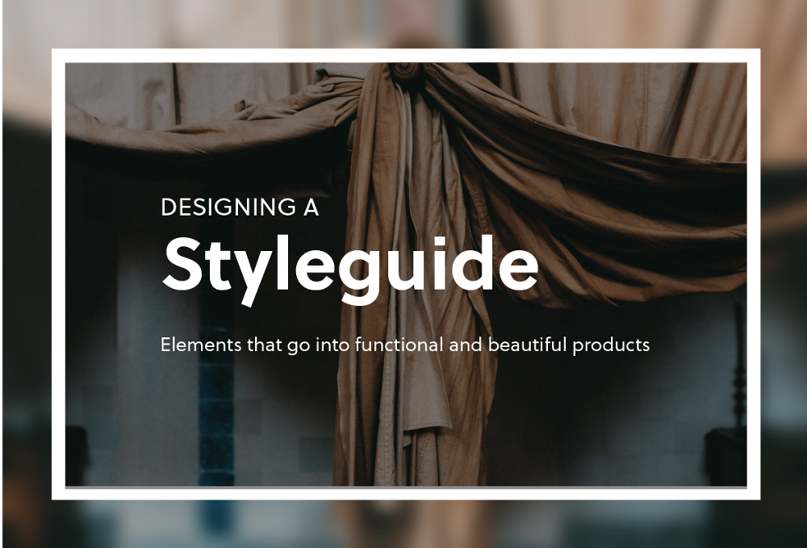

Learn basic Flexbox in just 10 minutes
Justin Yek
Flexbox, short for “flexible box,” is a layout mode introduced in CSS3 that determines how elements are arranged on a page so that they behave predictably under different screen sizes and devices. It is called Flexbox because of its ability to expand and shrink elements inside the the flex box to best fill the available space.
Why striving for perfection might be holding you back as a newbie web developer
Rick West
Done is better than perfect. When you’re learning, build something until it works correctly and looks decent, and then forget it and move on. Don’t look for perfection. There are bigger and better things for you to be learning and working on than tweaking the padding on your.
How to simplify your app’s authentication by using JSON Web Token
Sudheesh Shetty
Every application we come across today implements security measures so that the user data is not misused. Security is always something that is changing and evolving. Authentication is one of the essential part of every application.
How to create visual variants for React components using styled-components
Gilad Dayagi
Styled-components is a library for styling React components that took the React world by storm when it was introduced at the end of 2016. The library is powerful and flexible. And solves most of the problems that classic CSS has in the so-called Component Age.
How to host lightweight apps for free
Pubs Abayasiri
When you look for web hosting services, there are many free options available. But there aren’t that many places where you can host full stack web apps that involve APIs, CGI, or AJAX backend queries — especially if you want to use something other than PHP.
Before you can master design, you must first master the fundamentals
Jonathan Z. White
Last week, one of my readers sent in a question: How do I become a better visual designer? As I was thinking about how to answer this question, my mind wandered to my experience with learning Mandarin Chinese. Recently, I decided to teach myself Mandarin. When it comes to learning a new language, you first have to start with the fundamentals. Nouns, pronouns, and verbs form the basis for conveying more complex ideas.

A million requests per second with Python
Paweł Piotr Przeradowski
Is it possible to hit a million requests per second with Python? Probably not until recently. A lot of companies are migrating away from Python and to other programming languages so that they can boost their operation performance and save on server prices, but there’s no need really. Python can be right tool for the job.
REST in Peace: Microservices vs monoliths in real-life examples
RDX
I’ve consulted on a dozen microservice projects. Some were awesome (this is the future!) and some were equally frustrating (who invented this crap?) It’s the execution that matters, not the approach. You can succeed or fail with either. Don’t just accept the love/hate propaganda out there.
Which programming language should you learn first? ʇdıɹɔsɐʌɐɾ :ɹǝʍsuɐ
Quincy Larson
Most people’s journey toward learning to program starts with a single late-night Google search. Usually it’s something like “Learn ______”. But how do they decide which language to search for?
Designing a styleguide: elements that go into building compelling products
If you look at companies like Dropbox, Google, and Twitter you’ll notice that they each have their own unique aesthetic. Across all their products, both mobile and web, there is a sense of consistency and uniformity in their design. The way that companies and products achieve consistency is through styleguides.